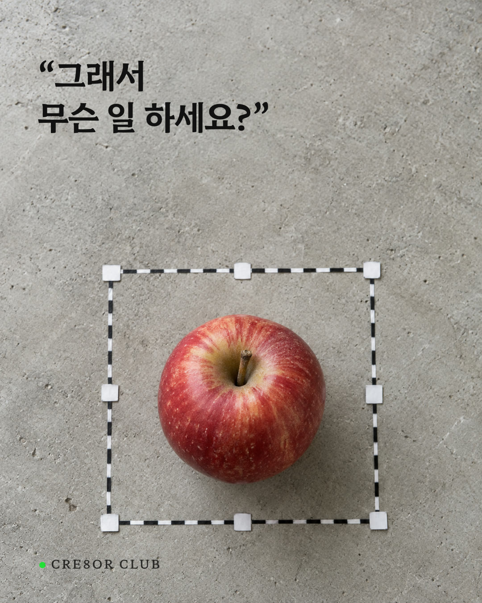
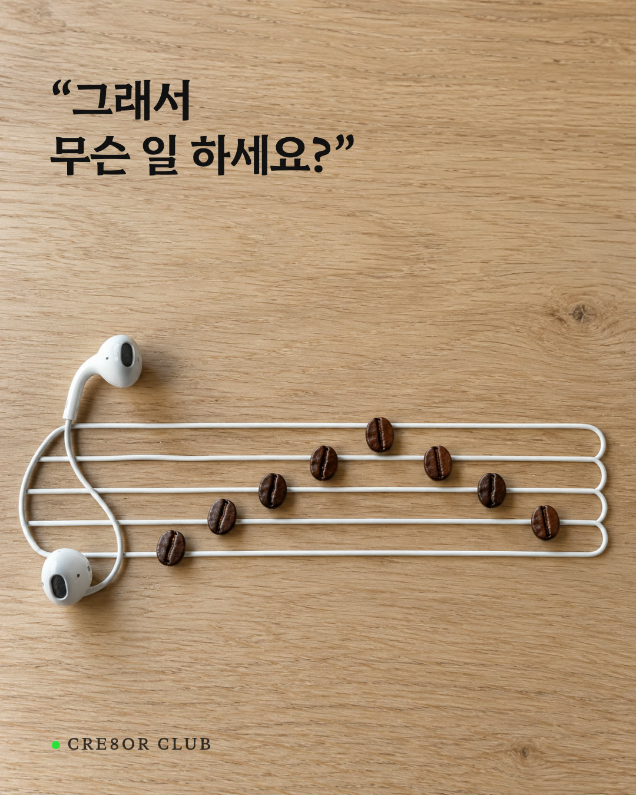
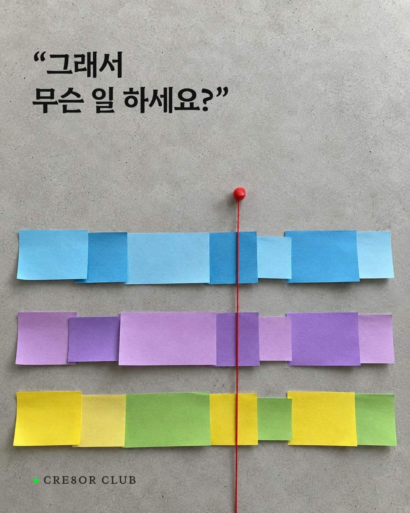

정체성 편 첫 장 3컷 — 일상 사물 비틀기
같은 질문 「그래서 무슨 일 하세요?」에 직함 대신 물건이 대답해요. 하나를 고르시면 그 컷으로 블라인드 비교와 2장 이후를 이어요.



세 컷 모두 이미지 생성으로 만든 가상 사진이에요. 게시용은 같은 구도로 실물을 만들어 찍어요. 내부 검토용이라 검색 노출은 막았어요.
같은 질문 「그래서 무슨 일 하세요?」에 직함 대신 물건이 대답해요. 하나를 고르시면 그 컷으로 블라인드 비교와 2장 이후를 이어요.



세 컷 모두 이미지 생성으로 만든 가상 사진이에요. 게시용은 같은 구도로 실물을 만들어 찍어요. 내부 검토용이라 검색 노출은 막았어요.